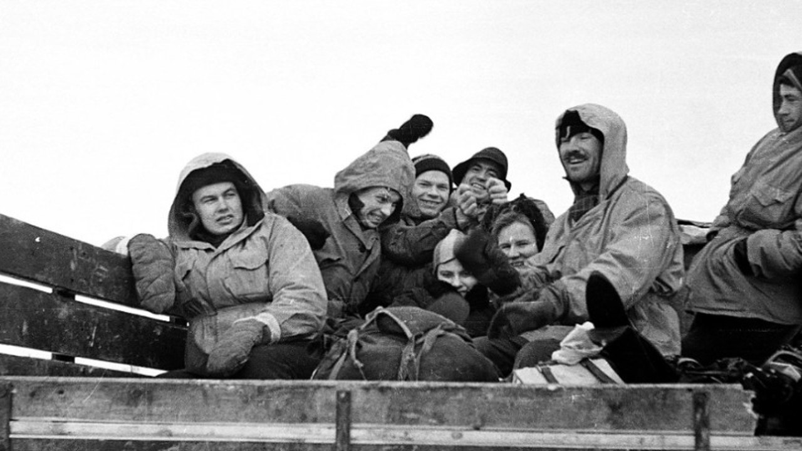
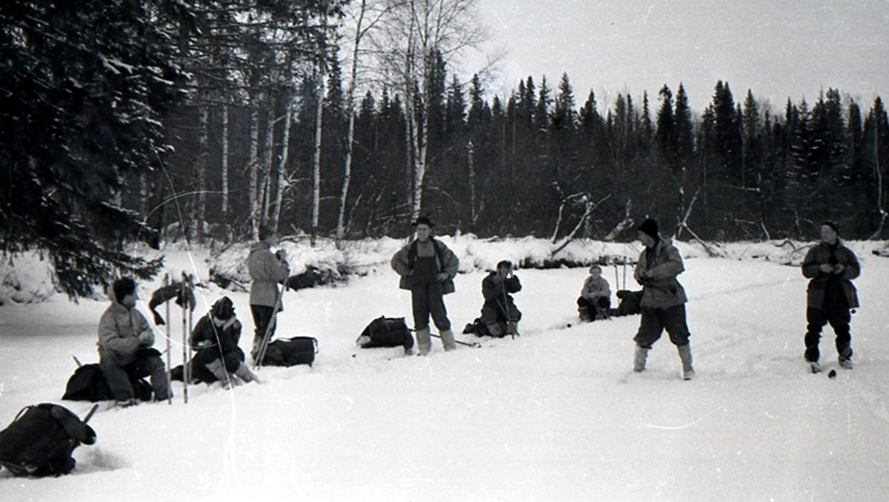
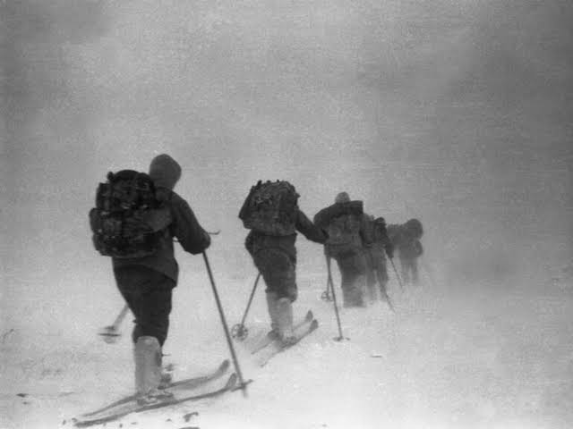
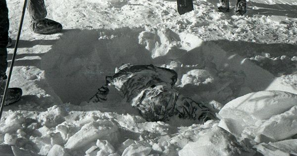
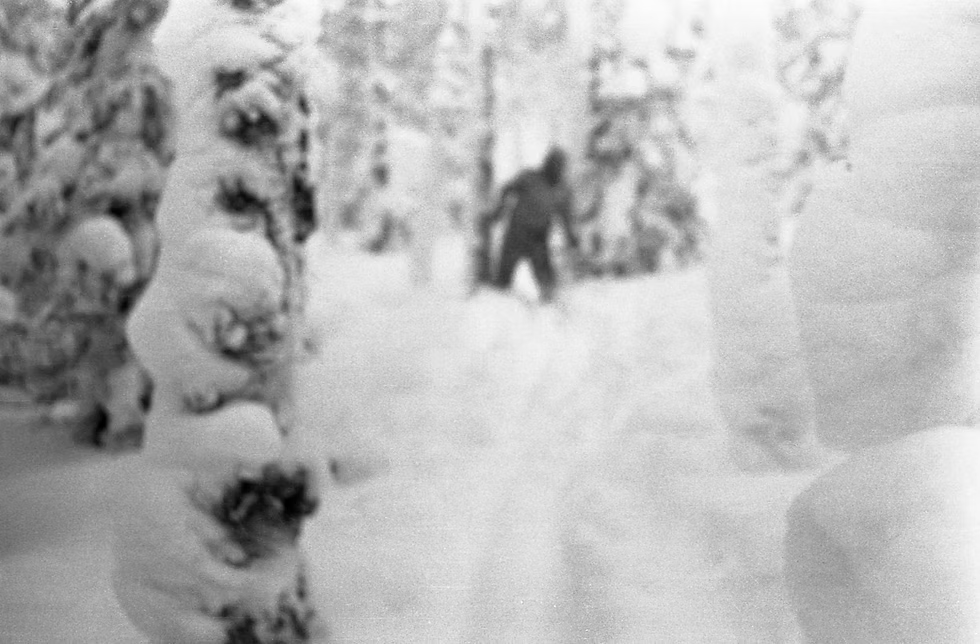

ARCHIVO CLASIFICADO · URAL DEL NORTE · 1959
PASO DIÁTLOV
Nueve excursionistas. Una carpa rajada desde adentro.
Un final que nadie ha podido cerrar.
desliza despacio y con cuidado de no perderte cada archivo ↓
Antes de abrir la carpeta

Hay casos que se resuelven y casos que se archivan. Este se archivó en 1959 con una frase que no explica nada: "una fuerza natural irresistible". Nueve personas, una sola noche, una montaña. Lo que sigue son los hechos de una noche tragica. Lo que falta, lo sabrás al final…
La expedición

Enero de 1959. Igor Diátlov lidera a nueve estudiantes y graduados del Politécnico de los Urales rumbo al Otorten. Uno se devuelve enfermo a mitad de camino. Fue el único que vivió para contarlo. Las últimas fotos del grupo muestran sonrisas, esquís y cero presentimientos.
La carpa

Los escursionistas no volvieron por lo tanto se envía a los rescatistas que encuentran una carpa semienterrada en Kholat Syakhl, "la montaña de los muertos". Rajada desde adentro. Botas, abrigos y comida seguían ahí, intactos. Nadie sale a -30 °C sin zapatos a menos que algo, afuera o adentro, sea peor que el frío.
Las huellas

Huellas de pies descalzos o en medias, durante 1,5 km. De pronto bajo un cedro, los primeros cuerpos y restos de una fogata. Dos de ellos con ropa que le pertenecia a otras personas. intentaron sobrevivir. Pero... ¿de qué?
El barranco

El deshielo entrega a los demás, a 75 metros del cedro, bajo cuatro metros de nieve. Fracturas que, según los forenses, exigían la fuerza de un choque de auto, sin heridas externas. Ropa con trazas de radiación. Y un detalle que los informes mencionan casi en voz baja. A una de las mujeres le habian arrancado los ojos y la lengua...
Las teorías

Avalancha. Vientos violentos. Una prueba militar secreta. Infrasonido. Esferas luminosas vistas en el cielo esa misma noche por otros excursionistas y hasta pie grande. Cada hipótesis explica una pieza y rompe otra. La investigación soviética se cerró en meses y la zona quedó prohibida tres años. Décadas después, otra investigación oficial apostó por una causa...
La última foto
La cámara recuperó imágenes borrosas: una luz entre los árboles, una figura de espaldas y un último cuadro que el investigador jefe describió como "algo que no debería estar ahí". Entonces el informe sostiene que la verdadera causa fue…
DOCUMENTO RESTRINGIDO
CONCLUSIÓN DEL CASO
Lo que realmente pasó esa noche fue , y las pruebas apuntan a detrás de . El único sobreviviente dijo .
Para desbloquear el desenlace debes haber pagado la cuota de cumpleaños de Octubre.